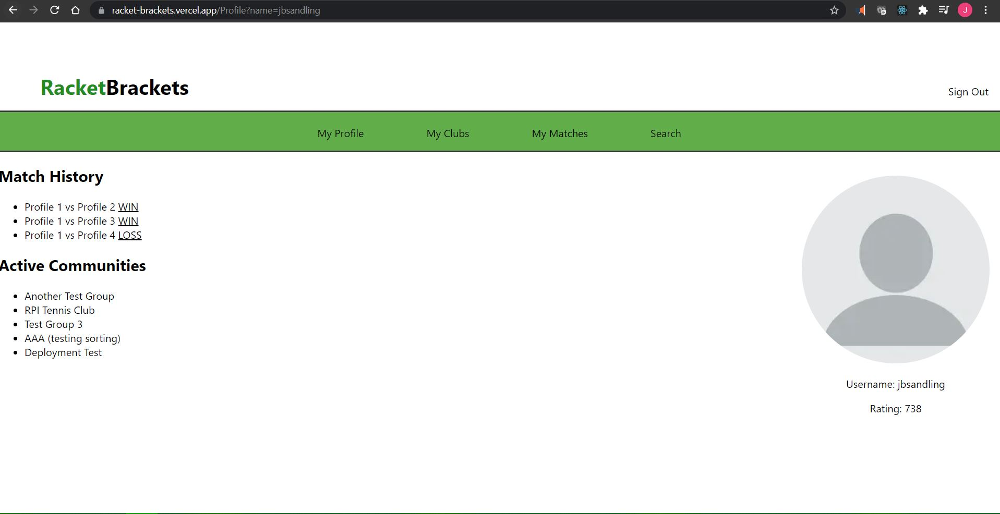

Previous Works

Mueller Center Reservation System
A website designed to assist with the managing of the population of RPI's Mueller Center in order to adhere to COVID-19 regulations. This includes a reservation and check in/out system to facilitate students using the Mueller Center's facilities.

RacketBrackets
An SD&D project designed to help tennis players find local competitors and communities. Players are ranked by the Elo Rating System and can challenge other players, and create and interact with local communities.

Poll Buddy
An RCOS project intended to replace RPI's iClickers by providing a lightweight online questionnaire platform allowing professors to easily poll large classes.